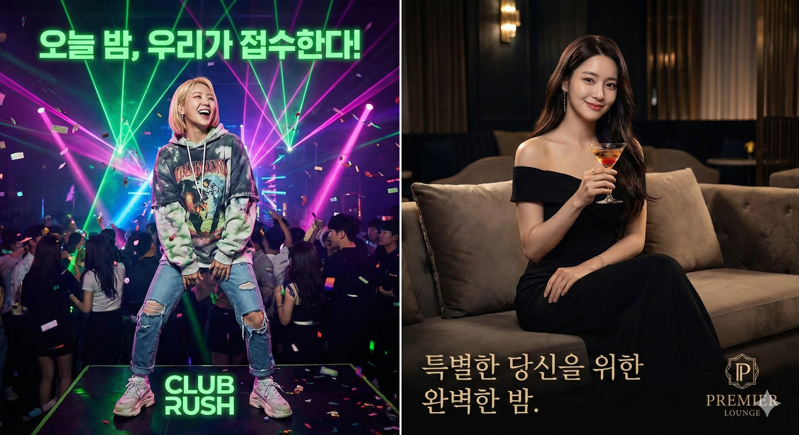

울산챔피언나이트 방문 전 핵심 데이터 요약
울산 지역에서 야간 엔터테인먼트 공간을 찾고 있다면, 울산챔피언나이트에 관한 기본 데이터를 먼저 파악하는 것이 합리적입니다. 아래 리포트는 위치 데이터, 시간대별 체감 차이, 공간 설계 특성을 정리한 자료입니다.
위치 분석 리포트
울산챔피언나이트는 남구 상권과 가까워 접근 동선이 단순합니다. 처음 방문하더라도 주변 랜드마크를 기준으로 쉽게 도착할 수 있는 위치에 자리하고 있습니다.
시간대 체감 비교
초저녁 (20시~22시)
방문 밀도가 낮아 공간 전체를 여유롭게 둘러볼 수 있습니다. 조명은 상대적으로 부드러운 톤으로 운영되며, 음악 볼륨도 대화에 방해되지 않는 수준입니다. 공간 파악이 목적이라면 이 시간대가 적합합니다.
피크 타임 (23시~01시)
에너지가 최고조에 달하는 시간대입니다. 조명 연출이 강해지고 DJ 셋이 본격화되면서 플로어 밀도가 크게 올라갑니다. 활발한 분위기를 원하는 방문자에게 권장되지만, 이동 동선이 제한될 수 있다는 점을 감안해야 합니다.
마감 시간대 (01시 이후)
인원이 점차 줄어들며 공간이 다시 여유로워집니다. 라운지 구역 중심으로 잔류 인원이 배치되고, 전체적인 볼륨과 조명이 한 단계 낮아집니다. 마무리를 차분하게 하고 싶은 경우에 맞는 시간대입니다.

공간 구조 특징
울산챔피언나이트의 내부는 크게 세 영역으로 나뉩니다. 첫째, 입장 직후 만나는 리셉션 영역으로 전체 분위기를 처음 감지하는 구간입니다. 둘째, 메인 플로어로 DJ 부스와 조명 장비가 집중 배치된 핵심 공간입니다. 천장 높이가 확보되어 있어 소리의 울림이 크고, 시각적으로도 개방감이 느껴집니다.
셋째, 사이드 라운지 영역입니다. 메인 플로어와 분리된 동선에 위치하며, 상대적으로 소음이 낮아 대화가 가능합니다. 소규모 그룹이 자리를 잡거나 잠시 쉬어가기에 적합한 구역으로, 울산챔피언나이트 내에서 체류 시간을 유연하게 조절하는 데 활용됩니다.
세 영역 사이의 이동은 단방향이 아니라 자유 동선으로 설계되어 있어, 원하는 시점에 원하는 구역으로 이동할 수 있습니다. 이 구조를 미리 파악해두면 현장에서 불필요한 배회를 줄일 수 있습니다.
방문 적합 유형
적합도 높음
- 울산 남구 인근에 거주하거나 체류 중인 경우
- 음악과 조명이 결합된 공간을 선호하는 경우
- 3~6명 규모의 그룹으로 방문을 계획하는 경우
- 금요일·토요일 야간 일정이 비어있는 경우
재검토 권장
- 조용한 바 또는 카페 분위기를 기대하는 경우
- 큰 소리와 강한 조명에 예민하게 반응하는 경우
- 평일 방문만 가능한 일정인 경우
자주 묻는 질문
Q. 울산챔피언나이트 입장 시 필요한 것은?
신분증 지참이 필수입니다. 만 19세 미만은 입장이 제한되며, 모바일 신분증 인정 여부는 현장에서 달라질 수 있으므로 실물 신분증을 준비하시기 바랍니다.
Q. 드레스코드 규정이 있나요?
엄격한 드레스코드는 없으나, 운동복·슬리퍼·반바지 착용 시 입장이 제한될 수 있습니다. 깔끔한 캐주얼 이상의 복장을 권장합니다.
정리 요약
울산챔피언나이트는 울산 남구 상권 인접 구역에 위치한 야간 엔터테인먼트 공간입니다. 시간대에 따라 분위기 밀도가 확연히 달라지므로, 본인의 목적과 체력에 맞는 시간대를 미리 선정하는 것이 핵심입니다. 위 리포트의 데이터를 참고하여 방문 여부와 시점을 판단하시기 바랍니다.
정책 고지
본 페이지는 정보 제공 목적이며 불법·유해 콘텐츠 및 알선/매칭 등으로 오해될 수 있는 서비스를 제공·홍보하지 않습니다. 이미지/텍스트는 권리 범위 내 사용을 원칙으로 하며 권리침해 요청 시 신속히 조치합니다.